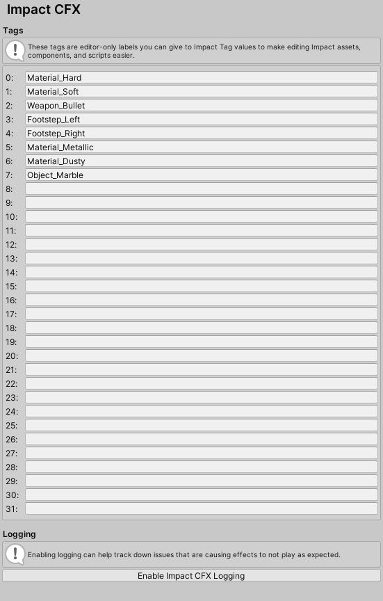
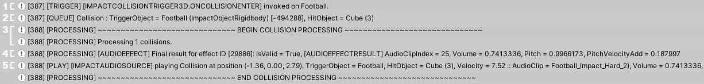

Impact CFX Project Settings
Impact CFX Project Settings are defined in .
Impact Tags
Impact Tags are the foundation though which Impact determines what effects to play. They are how Impact communicates material information between Impact Materials, so that the materials know what effects to play for a collision.
The tag names defined here are editor-only. Under the hood, tags are stored in a 32-bit integer, similarly to Unity's own Layers system, hence the 32 tag limit.
Getting the most out of Impact Tags takes some careful consideration. Generally, it is best to use them to group and categorize materials that share common characteristics. For instance, materials like Stone, Wood, Metal could all be considered "Hard" materials, while materials like Grass, Carpet, Sand could be considered "Soft" materials. Here are some examples of ways you can define tags:
- Material Types - You can group materials into different types such as Hard and Soft to play different audio for collisions with hard and soft objects.
- Material Attributes - You can define tags for material attributes such as Dusty to show dust effects and Metallic to show spark effects.
- Actions - You can define tags for actions such as Footstep to play footstep effects and Bullet to show bullet impact effects.
Logging
The Impact CFX Settings also has the ability to Enable Impact CFX Logging.
If you are having issues with your effects not playing as expected, it may be helpful to enable logging. This will log collision events and effect processing, giving some insight into how the system is processing a collision, which may help determine where any problems lie.
Note: Logging is enabled via the IMPACTCFX_DEBUG Scripting Define Symbol, which you can manually add and remove from your Player settings if you wish.
Below is an example of the logging for a single collision event.
- 1 - Logs marked with [TRIGGER] come from the collision triggers. These logs tell you exactly what trigger was invoked and on what object. If the trigger aborts processing the collision event, a reason will be given in these logs. If you don't see any trigger logs, this means that Unity's collision messages are not being invoked, indicating a physics issue outside of Impact CFX.
- 2 - Logs marked with [QUEUE] come from the Impact CFX Manager when a collision is queued for processing. You will also see these for collision effects created from raycasts.
- 3 - This designates the beginning of the actual processing of the queued collision events, marked with [PROCESSING]
- 4 - This displays information about an effect that was processed. You can see the type of effect as well as information about the effect result. If the effect is marked as invalid, a reason will be given. If you don't see any logs for an effect, it likely indicates an issue with your Impact Materials.
- 5 - Logs marked with [PLAY] come from Audio Source, Particle, and Decal objects. They are logged when one of these objects is told to play an effect. These logs give information about the effect data passed to the objects.
ENABLING LOGGING CAN GENERATE A LOT OF MESSAGES.
It is best to test things with as few objects as possible, otherwise your console can very quickly be filled with hundreds of messages.